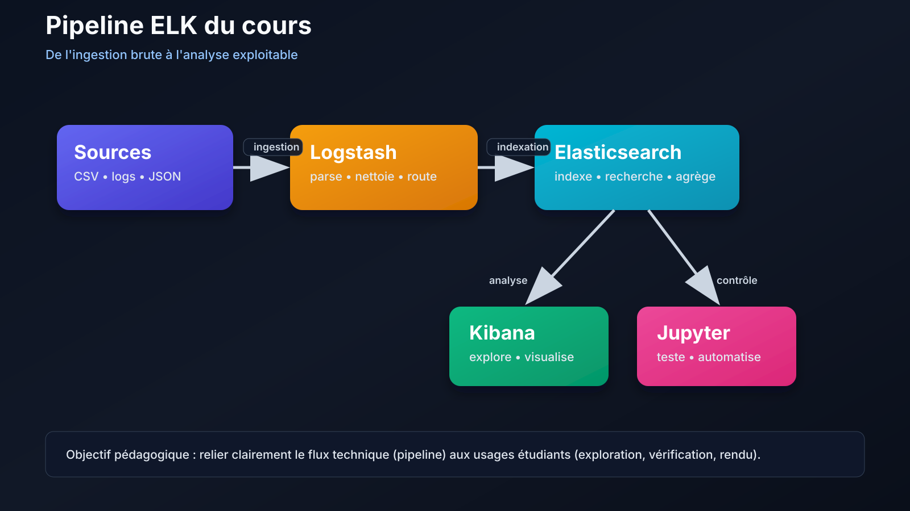

Accueil
Setup env
Exercices
1 / 1
# Introduction ## ELK : bases théoriques avant la pratique --- ## Introduction à ELK Pipeline cible du cours : ```text Source (CSV / logs) -> Logstash -> Elasticsearch -> Kibana -> Jupyter ``` Dépôt du cours : [https://github.com/LARBREAHELICES/ELK](https://github.com/LARBREAHELICES/ELK) --- ## Cas fil rouge des slides Pendant les démonstrations, vous suivrez un cas concret de monitoring web : - logs d'API (`/search`, `/checkout`, `/login`) - erreurs applicatives (`status >= 500`) - latence (`response_time_ms`) - visualisation dans Kibana (Discover + Dashboard) Objectif : relier chaque visuel à une requête Elasticsearch vérifiable. --- ## Exemple réel de dataviz Kibana (Lens) <img src="https://static-www.elastic.co/v3/assets/bltefdd0b53724fa2ce/blt5bf7610cab1034cf/68b775ef981e9660952a236f/screenshot-lens-switch-chart-index-landing-page.webp" alt="Capture d'écran Kibana Lens" style="width: 100%; max-width: 1320px; border-radius: 14px; border: 1px solid #263043;" /> --- ## Schéma ELK du cours <p></p> --- ## Ce que vous pratiquerez dans les séances 1. Construire un index propre (mapping `text`, `keyword`, numériques) 2. Vérifier la qualité des données ingérées 3. Écrire des requêtes simples puis complexes (`bool`, `must`, `filter`) 4. Utiliser des agrégations pour produire des indicateurs 5. Comprendre l'effet du tokenizer et de l'analyzer sur les résultats 6. Traduire les besoins en visualisations fiables dans Kibana --- ## Repères historiques - **2009** : naissance de **Logstash** (collecte et transformation de logs) - **2010** : première version publique d'**Elasticsearch** - **2013** : **Kibana** devient l'interface de visualisation la plus utilisée avec Elasticsearch - **2015+** : arrivée de **Beats** pour la collecte légère sur serveurs/postes - **2018** : l'écosystème est souvent présenté comme **Elastic Stack** (ELK + autres briques) Le terme **ELK** reste très utilisé en pratique pour parler du pipeline central Logstash + Elasticsearch + Kibana. --- ## À quoi sert ELK ELK sert à traiter des données volumineuses et hétérogènes pour : - centraliser des logs applicatifs et systèmes - rechercher rapidement dans de grands volumes de texte - produire des indicateurs (agrégations, tendances, anomalies) - visualiser les résultats dans des dashboards exploitables --- ## Rôle des composants - **Source** : fichiers, logs applicatifs, exports CSV/JSON - **Logstash** : lit les données, parse, nettoie, transforme, enrichit - **Elasticsearch** : indexe les documents et répond aux requêtes - **Kibana** : explore les données et crée des visualisations - **Jupyter** : automatise les vérifications et les analyses en Python --- ## Cycle de traitement des données Le flux suit cette logique : 1. Lire les données brutes (`input`) 2. Transformer les champs (`filter`) 3. Indexer dans Elasticsearch (`output`) 4. Vérifier le résultat (mapping, volume, qualité) 5. Rechercher et analyser (requêtes + visualisation) --- ## Vocabulaire à maîtriser - **Index** : conteneur logique de documents - **Document** : objet JSON stocké dans Elasticsearch - **Champ** : propriété d'un document (ex: `title`, `release_date`) - **Mapping** : définition des types de champs - **Analyzer** : traitement texte pour la recherche full-text - **Agrégation** : calcul analytique (groupement, moyenne, histogramme, etc.) --- ## Pourquoi cette base est importante Sans ces notions : - on ingère mal les données (types incorrects, dates mal parsées) - les recherches deviennent incohérentes - les visualisations deviennent trompeuses Avec ces notions : - on construit des pipelines robustes - on interprète correctement les résultats - on peut passer rapidement d'un besoin métier à une requête fiable